Core Concepts
Three ideas explain why Distil's numbers are real and why the approach is different: decision-equivalence as the correct quality target, a statistical certificate that enforces it, and cache-aware cost modeling that makes aggressive compression financially correct.
Interactive — select any block (click, or Tab then Enter) to open the concept or technique behind it.
1. Decision-equivalence, not byte-equivalence
Most context compressors frame the problem as a string transformation: shrink the context, compare the output byte-by-byte, report overlap as accuracy. That framing has a fatal flaw — byte-equivalence and high compression are information-theoretically in tension. A claim of "87% compression, 100% accuracy" under byte-equivalence is self-contradicting; the two numbers cannot describe the same operation.
Decision-equivalence is the correct target. An agent only needs to take the same actions and produce the same outputs on the compressed context as it would on the original. "Same decision" means:
- The same tool calls (name + arguments) in the same order.
- The same final answer or action at each turn.
- Measured across a real multi-turn trajectory, not a single prompt.
This is measurable, certifiable, and compatible with aggressive compression. Context blocks that are causally inert — they never change a decision when removed — are provably free to drop, regardless of how many bytes they contain. Distil's salience protection identifies the load-bearing frontier (model-free, using a causal ablation pass rather than a scorer model) and ensures those blocks are never touched, regardless of compression depth.
claude-opus-4-8 grading run, Distil hit 83.2% token savings at a measured 0% decision-change rate (2026-07-05, distil 1.10.1 vs llmlingua 0.2.2 and headroom-ai 0.27.0) — with the ≤5%-at-95% bound certified offline by the conformal risk control (DERC).
trunc@500). The contract is right; the lesson is that a certificate earned on a single-turn proxy must be re-earned on the real task. Distil's defensible value: cache-aware savings inside a proxy-certified gate, plus a reversible recovery tier. E8 (500-instance long-horizon ReAct agent, 6 conditions, full SWE-bench Verified) is that re-earned test. The relevance-gated tier (E) achieves 36.8% pass@1 — the highest of any compressor tested — and is not distinguishable from full context (difference −2.4 pp, 95% CI [−5.7, +0.9]; McNemar p=0.19), though the interval's lower end is past a 5 pp margin, so non-inferiority at 5 points is not shown. It is a research configuration; the shipped path's task outcome is on SWE-bench Lite (cost-neutral, within about 2 points). It also beats Headroom (+4.2 pp, p=0.035). LLMLingua-2 removes a nearly identical share of context (52% vs 53%) yet reaches only 2.4% pass@1 — 34 points lower, isolating what is kept as the deciding factor. Lossy truncation collapses to 5.6%. Distil does not claim cheapest; Headroom is cheaper. The claim is certified accuracy with a guarantee. E10 extends this to a trajectory-level certificate (distribution-free, same LTT/HB engine as E2): with 95% confidence, the gated compressor costs a solvable task on ≤11.4% of exchangeable runs, proven out-of-sample across 1000 calibration/test splits.
Two recently shipped techniques apply decision-equivalence directly to the coding-agent read → edit → re-read loop. Cache-delta context coding (distil/cachedelta.py) replaces an exact or near-duplicate re-read with a back-reference or reference + diff. It is decision-equivalent because the prior version of the file is already present earlier in the cached conversation — prior version + diff carries the same information. It also enforces cache-monotonicity: only the volatile suffix is mutated, so every prompt-cache hit that existed before the turn still exists after it. The deepest layer, AST-structural delta (distil/astdelta.py), fingerprints Python definitions with ast.dump (invariant to whitespace, comments, and import order), so a reformat-only re-read is a zero-change reference rather than a spurious diff. For a full treatment see Techniques → Cache-delta and AST-structural delta.
--verbatim). Reversible — content is digested but byte-recoverable on demand via the local store / distil_expand (the default on PAYG; like a zip you unpack only when needed). Lossy — dropped irrecoverably (every other tool). All three Distil tiers are certified decision-equivalent; Headroom also ships a local store + retrieve (uncertified, dev-facing); only Distil certifies the reversible tier and makes recovery agent-facing — an injected tool the model calls mid-task. (--lossless-only, alias --safe, restricts to Tier-0 verbatim — no lossy shaping, no tool injection, and no Tier-1 stubs; it folds directly into --verbatim. Use for subscription / OAuth sessions.) Two rules sit outside the tier ladder and bind all of it: a block whose bytes are a verbatim slice of a file is never digested at all, so an Edit quoting it still matches (provenance is read from the shell command, not just the tool name); and no keep budget is shared between blocks, so a large untrusted block cannot starve a trusted one — see the threat model and the degradation curve for what each rung of the ladder actually costs.
2. The quality contract
A compression strategy in Distil does not ship unless a pre-registered statistical gate certifies it. Distil uses two complementary certification methods, both grounded in conformal prediction:
- TOST (Two One-Sided Tests) — the standard non-inferiority framework used in pharmaceutical trials. Pre-register a margin (default: 2 pp drop in task-success rate) and significance level (default: α = 0.05). If the lower one-sided test rejects H₀ that mean ≤ −margin, the strategy is certified non-inferior.
- DERC (Distribution-free Equivalence with Risk Control) — a Learn-Then-Test / CRC certificate that gives
P(R(λ̂) ≤ α) ≥ 1−δwith Hoeffding–Bentkus p-values. No distributional assumptions; valid at finite sample sizes.
The Student-t tail used in TOST is computed from a hand-rolled regularised incomplete beta function — zero dependencies on scipy or numpy. Both gates run across all 7 corpus domains.
How the TOST gate works
- Pre-register the indifference margin and significance level.
- For each turn, run the agent on the original context and on the compressed context; record whether the decision matched.
- Compute paired differences (compressed score − baseline score) across all turns.
- Run the lower one-sided test. Reject H₀ at α → the strategy is certified non-inferior.
$ distil certify --strategy distil decision-equivalence match rate: 100.0% TOST non-inferiority (margin=0.02, alpha=0.05): mean diff=+0.000, p=0.0000 VERDICT: PASS (certified non-inferior) $ distil certify --strategy aggressive decision-equivalence match rate: 0.0% TOST non-inferiority (margin=0.02, alpha=0.05): mean diff=−1.000, p=1.0000 VERDICT: FAIL (NOT certified — would degrade quality)
A strategy that cannot pass the gate simply does not ship. You can watch the gate reject a quality-degrading strategy yourself — it is not a configuration option.
The trajectory-level certificate
DERC certifies the step — that the next action is unchanged. Distil's own E7 experiment, and the 2024–26 agent-compression literature (e.g. arXiv 2412.17483, 2510.00615), shows why that is not the whole story: a statistically valid per-step certificate can pass while end-to-end task success collapses, because per-step fidelity metrics systematically overpredict multi-step success. Certifying next-action equivalence and implying task fidelity is a category error.
distil certify-trajectories certifies the invariant that actually transfers: run your eval suite twice — full context and compressed — on the same tasks, and get a distribution-free bound on how many solvable tasks compression may cost you, using Conformal Risk Control and Learn-Then-Test (Angelopoulos et al., arXiv 2208.02814) on the matched full/compressed outcomes.
$ distil certify-trajectories outcomes.jsonl --alpha 0.05 --delta 0.05 # each line: {"task_id": "...", "full_success": true, "compressed_success": true} distil trajectory-risk certificate matched trajectories : 200 observed degradation : 0.50% risk bound (1-δ) : 3.20% certified (α=0.05, δ=0.05) : True With confidence 95%, compression degrades at most 5.0% of tasks the full context would have solved (observed 0.50% over 200 matched trajectories).
- Exchangeability. The bound holds for future trajectories exchangeable with the calibration set. Agent workloads drift; pair the certificate with the built-in anytime-valid drift monitor and recalibrate when it alarms — a static certificate silently loses coverage under shift. The live alarm bets against the same budget the certificate is written at (
distil.conformal.BUDGET_ALPHA), and on the proxy it acts: a breach holds compression at lossless-only, across restarts, untildistil calibratethendistil reset --drift-guard(opt out:DISTIL_NO_DRIFT_GUARD=1). - The loss is the task outcome you measured.
compressed_successshould come from a real end-to-end evaluation (test suite passed, task rubric met), not a proxy metric — proxies are exactly the failure this certificate exists to fix. - No adaptivity. Trajectories used to tune the compressor must not be reused as calibration data — that breaks exchangeability a second way. Keep a held-out calibration stream.
min_n=20 matched trajectories the command refuses to certify rather than overclaim — a certificate from a handful of samples is noise dressed up as a guarantee.
Matched failures also feed the outcome-guided compression policy (always on): when a task the full context solved fails under compression, the content classes digested in that trajectory are suspects, and classes whose digestion keeps co-occurring with regressions get protected — kept byte-exact, automatically. Evidence is stored as content-free signatures (json:l, error:m), never content, so it composes with the expand flywheel without adding new state to reason about. Like that flywheel, it is never-regressing by construction: it can only make Distil more conservative, never less accurate.
See CLI Reference → distil certify-trajectories for the full flag reference.
3. Cache misses — not size — dominate agent cost
This is the insight most context compressors miss — and where Distil's biggest wins come from.
In a multi-turn agent loop, the growing context is re-sent to the model at every turn. With prompt caching enabled:
- A cache read costs roughly 0.1× the normal input price.
- A cache write costs roughly 1.25× of normal input.
- A cache miss (fresh token) costs the full input price.
The dominant cost lever is therefore not how many tokens you send — it is how many of those tokens hit the cache. A naive compressor that rewrites the context every turn drops the longest common prefix to zero, losing the 10× discount on every previously-cached block.
Distil's cache-aware engine models this explicitly. It keeps the prefix byte-stable across turns via schema canonicalization and volatile-field extraction, compresses only the volatile tail, and proves via simulation that the naive approach is strictly dominated.
Confirmed on the live path from 1.45, and worth stating because it was
not always true there: the provider's reported cache_read shows the prefix
surviving every turn (a live A/B whose raw output was not committed, so no percentage is
quoted here). Earlier versions reproduced the naive failure this section describes.
There is one moment the rule relaxes. A provider's cache entry lives for a fixed time after the last request that used it; a turn that arrives after it has expired pays to re-write the whole prefix no matter what is sent. Cold-point recompression uses exactly that turn to shrink older tool output behind recoverable stubs, then holds the smaller prefix byte-stable from there on. It acts only when expiry is certain from distil's own clock, and it is not yet measured live — see the cache contract, clause (h).
The numbers, measured

The 33% figure is the conservative lossless, single-trajectory result. Across a varied 64-trajectory corpus, the certified lossless ceiling is ~58%. The distil-causal mode reaches ~81% on that offline corpus. And it holds up where it counts — under live model grading: in the live head-to-head against the real installed packages (a realistic, decision-determined corpus, graded by claude-opus-4-8), Distil certified 83.2% savings at a 0% decision-change rate, while LLMLingua-2 reached only 53.1% savings and flipped 1-in-8 decisions, and Headroom 0.27.0 achieved 39.7% at 0% — 2026-07-05, distil 1.10.1 vs llmlingua 0.2.2 and headroom-ai 0.27.0. Against headroom-ai 0.37.0, re-run 2026-09-04: distil-causal takes 52.9% tokens / 58.7% dollars at 100% decision-equivalence (PASS) vs Headroom 1.7% / 2.0% / 81% (FAIL) on the warm corpus gate, and on the read→edit→re-read codebench workload Headroom takes 35.6% tokens for +4.9% dollars.
For the compression mechanics, see Techniques. To price any trajectory yourself, see CLI Reference → distil savings.
Fundamentals — what a token is
- What a token is — Byte-Pair Encoding, and the anatomy of one.
- Why JSON, logs and code cost roughly 2× the tokens of prose.
- Why tokenizers aren't interchangeable — and can shift under you.
- Where the tokens actually go in a single agent request.
What a token actually is
A token is not a character and not a word — it's a subword unit, the atomic chunk a model reads and predicts. Modern models build their vocabulary with Byte-Pair Encoding (BPE): start from individual bytes and greedily merge the most frequent adjacent pair until you hit a target vocabulary size. Frequent words collapse into one token; rare words fall back to a handful of subword pieces. There is no <unknown> — every possible string is representable, in any language.
Three consequences fall out of how BPE works, and they drive the whole course:
- Structured text is expensive. Prose lands near ~4 characters per token; JSON, logs and code are roughly 2× denser because punctuation, indentation and
snake_case/camelCaseboundaries break merges into many short tokens. Agents traffic almost entirely in structured text — tool calls, file contents, stack traces — so they live in the expensive regime. - Tokenizers are not interchangeable. Every model family segments differently, and even within a family it can shift: Anthropic's newer tokenizer (introduced with Opus 4.7) produces roughly 30% more tokens than older models for the same text, and billing follows the new count. Always count with the target model's tokenizer.
- Tokens are the unit of both the bill and the budget. The context window is denominated in tokens; price is per-token; and output costs several times more than input (Opus 4.8: $5/M in, $25/M out — a 5× ratio). Input dominates agent bills anyway, for the reason Module 2 makes precise.
Where the tokens go — anatomy of one request
Here's where most cost surprises come from. A single agent turn is not "the user's question." The API is stateless, so every turn re-sends the entire working set. A typical request, before the model reads a word of your actual task, already carries:
The biggest, most-overlooked sources of waste, with the hardest public numbers we have:
- Tool definitions, repeated every turn. Anthropic has reported tool definitions consuming 134K tokens before optimization, and a typical five-server setup spending ~55K tokens before the conversation even starts. Paid every turn.
- Tool-result bloat. Logs, JSON dumps, file contents and search results get appended to history and replayed on every subsequent turn, long after they're stale. Keeping intermediate results out of context cut one Anthropic research workload from 43,588 → 27,297 tokens (−37%).
- History re-send. The whole transcript goes back up the wire each turn — the single largest growing cost, and the subject of Module 2.
- Redundant retrieval. RAG often injects overlapping, low-signal chunks; context is a finite attention budget with diminishing returns, so more tokens can mean worse answers, not just costlier ones.
- A token is a BPE subword unit; structured text (JSON, code, logs) costs ~2× the tokens of prose — and agents live in that expensive regime.
- Count tokens with the target model's tokenizer; they're neither portable across families nor fixed within one.
- Most of an agent request is scaffolding (system prompt, tool schemas, history, stale tool results) — not your task. That gap is where compression lives.
Cost & Compression
- Why multi-turn cost grows with the square of the conversation.
- How prompt caching rewrites the math — and what silently breaks it.
- The full family tree of compression, mapped by risk vs. savings.
- Why a trained compressor beats a heuristic — and how it fails.
Module 1 showed where the tokens pile up inside a single request. Now we follow them across a whole conversation — where the real money is.
The multi-turn tax: why cost is quadratic
Single-turn cost is linear and boring. Multi-turn is where bills explode — and the shape is quadratic, not linear. Because each turn re-bills all the tokens before it, the cumulative cost of an n-turn loop is the sum 1 + 2 + … + n = n(n+1)/2 = O(n²). A four-turn conversation costs 4 + 3 + 2 + 1 = 10× the first turn's tokens — not 4×.
- Prefill vs decode. Reading the prompt (prefill) is compute-bound and parallel; generating output (decode) is memory-bandwidth-bound and sequential — every output token re-reads the whole model and KV cache from memory. That's why output is priced 3–10× higher than input, and why a cache hit (which skips prefill compute) can discount input so aggressively.
- Prompt caching rewrites the coefficient, not the shape. If the prefix (system prompt + tools + frozen early history) is byte-stable, you write it once and read it every later turn. Anthropic's documented model: a 5-minute cache write costs 1.25× base input, a read costs 0.10× — a 10× gap. The curve stays quadratic; caching just shrinks the dominant term's coefficient by ~10×. Any byte change anywhere in the prefix invalidates everything after it — a
datetime.now()near the top, or editing a tool definition, silently throws the cache away.
This is the foundation of Distil's approach — see Concepts → cache misses dominate cost for the measured numbers behind it.
Try it: the cost of a loop
Real arithmetic — no marketing. This computes the n(n+1)/2 input cost from your inputs, using live catalog pricing and the documented cache multipliers (0.1× read / 1.25× write). The "with Distil" line applies a flat lossless reduction to fresh tokens; the default 26.8% is Distil's measured corpus aggregate (see Research). Assumptions are shown so you can check the math.
Assumptions: the starting values are arbitrary calculator defaults, not a measured session; input-token cost only (output excluded for clarity); prefix is cacheable and byte-stable; per-turn input = prefix + accumulated history; cached line writes the prefix once at 1.25× then reads it at 0.10× while the growing tail stays fresh; Distil line additionally removes 26.8% of fresh tokens losslessly. Illustrative — your numbers depend on your traffic.
Compression, the whole family tree
"Compression" is an umbrella over a dozen different ideas, each trading a different amount of quality risk for savings. The most common mistake in this space is conflating them — input-token compression (fewer tokens enter the model), KV-cache compression (the prompt is read in full; the retained attention memory shrinks), and cost reduction (same tokens, cheaper compute) are three different axes. Here is the honest map.
Make the same bytes cost fewer tokens
Whitespace and JSON normalization, key shortening, de-duplication, run-length collapse, compact serialization. Risk: essentially zero — information is preserved exactly. The ceiling is modest, but it is free savings you should always take first.
Drop the least-informative tokens
Score each token's informativeness (self-information / perplexity) and prune the bottom. Systems like Selective Context and the LLMLingua family reach 2–20× on prose. Risk: real — a low-surprisal but load-bearing token (a negation, a constraint) can be dropped, and output is often human-unreadable.
Rewrite the context shorter
Summarize retrieved docs or older turns into a compact form (RECOMP; rolling-summary agent memory; OS-style tiered memory like MemGPT). High ratios. Risk: lossy — specific facts, numbers and entities can be distorted or dropped, and errors compound across turns.
Keep knowledge outside the window
RAG and semantic caching hold the corpus in an index and pull only the top-k per query — lossy compression of a whole knowledge base into what fits. Risk: retriever-bounded — a missed chunk becomes a hallucination; a too-loose semantic-cache hit returns a stale answer.
Shrink the attention memory, not the input
H2O, Scissorhands, SnapKV, StreamingLLM keep only "heavy-hitter" or recent keys/values in GPU memory. Different axis: the model still reads every input token, so this cuts memory/latency, not your input bill. Eviction is permanent — a wrongly-dropped key can't return.
Compress context into learned vectors
Gisting, AutoCompressors and ICAE fold a long prompt into a few learned "summary" vectors (up to ~26× reported). Risk: model-specific & trained — the artifact only works for the model it was trained on, and reconstruction is lossy.
Why training a small model helps
The most effective compressors stopped using fixed heuristics and started learning. The root idea is knowledge distillation (Hinton et al., 2015): train a small "student" to imitate a large "teacher," using the teacher's soft probabilities — which carry far richer signal than a one-hot label.
Applied to compression, the move is to reframe it as per-token keep/drop classification. LLMLingua-2 is the clean example: take a small bidirectional encoder (XLM-RoBERTa, ~355M params), and train it on labels distilled from GPT-4 — prompt GPT-4 to compress text by word-removal only, then mark each original token "keep" or "drop." A trained classifier beats a perplexity heuristic for three concrete reasons:
- It sees both directions. Perplexity is computed left-to-right by a causal model; a bidirectional encoder uses full left-and-right context to judge importance.
- It learns task/domain importance and outputs calibrated keep probabilities, instead of a fixed, task-blind proxy.
- It's faster — one encoder pass replaces an autoregressive scoring loop (reported 3–6× faster), and the win is largest out-of-domain.
- Multi-turn cost is O(n²) because every turn re-bills all prior tokens — a 4-turn loop is 10×, not 4×.
- Prompt caching is the biggest lever (read @ 0.10× vs fresh @ 1.0×), but any byte change in the prefix throws the cache away.
- Compression is a family of techniques on three different axes; pick by your risk tolerance, lossless-first.
- A trained keep/drop model beats heuristics — but fails quietly, so it must be gated by proof.
Distil & Proof
- Why "it still looks fine" is not proof — and what is.
- Non-inferiority testing, borrowed from clinical trials.
- How Distil applies every technique in certified, risk-graded tiers.
- A practical playbook, and where the field is heading.
Proving it didn't hurt
Every technique in Module 2 can degrade quality invisibly — the output still looks reasonable. So the load-bearing question isn't "how much did you save?" It's "how do you know the model still makes the same decision?" Three things to internalize:
- Decision-equivalence, not cosine similarity. Embedding similarity is invariant to exactly the small changes — a flipped negation, a changed digit, a swapped entity — that flip a discrete answer. Cosine ≈ 0.99 can still cross a decision boundary. The only sound test is whether the model's downstream output is the same. See Concepts → decision-equivalence.
- Non-inferiority, not a difference test. A standard "are they equal?" test can only fail to reject — absence of evidence is not evidence of absence, so it can never prove "as good as." The correct frame is TOST / non-inferiority (Schuirmann, 1987, imported from clinical trials): pre-declare a margin δ, and prove the compressed variant is not worse by more than δ. That yields a positive guarantee.
- This is rare. The headline compression papers report raw score deltas, not equivalence tests. Carrying a statistical non-inferiority certificate is the upgrade — and it's what Distil's quality contract does on every certified run.
- Step-level proof isn't the whole proof. Distil's own end-to-end test (E7) found that a statistically valid per-step certificate can pass while multi-turn task success collapses under aggressive lossy compression. So Distil certifies a second, coarser invariant too —
distil certify-trajectoriesbounds how many solvable tasks compression may cost you, on matched full/compressed runs. See Concepts → the trajectory-level certificate.
How Distil applies it — in tiers
Distil's design choice is to apply the safe techniques aggressively, the risky ones only under proof, and to refuse anything it can't certify. That's the tier ladder: each rung saves more and risks more, and only ships if it clears the gate above it.
The pieces that make the ladder work — each documented in depth on Techniques (which also carries the full tier reference table):
- Cache-aware compression. Distil knows repeated tokens cost 0.1× and fresh tokens cost 1.0×, so it compresses to preserve the cacheable prefix and spends its byte budget where it matters. Naïve compression that rewrites the prefix can cost you more by busting the cache.
- Causal pruning. Rather than guessing importance from surprisal, Distil ablates context and checks whether the agent's decision changes — removing only what's provably inert.
- The keep-model codec (heuristic → logistic → transformer), trained on those causal labels, never-regressing because the gate has the final say.
- Input and output. Distil compresses the context going in and shapes the tool output coming back before it re-enters history — attacking both sides of the quadratic.
- Genuine measurement. Run it as a drop-in proxy and every real request's actual token reduction is accumulated into a local ledger — so
distil leaderboardshows what you genuinely saved, not a benchmark.
# See the certified frontier and what's safe to take on your own corpus distil eval distil bench # lossless + causal savings, with the non-inferiority verdict distil proxy --port 8788 # drop-in; records genuine savings as real traffic flows distil leaderboard # your real cumulative savings (local, private)
A practical playbook
Independent of any tool, this is the order of operations that saves the most for the least risk:
Do first — free wins
- Stabilize your prefix. Put the system prompt and tool schemas first and keep them byte-identical; move anything volatile (timestamps, IDs) after the last cache breakpoint. This alone can 10× the discount on repeated tokens.
- Turn on prompt caching and verify hits via the cache-token counts.
- Minify structured payloads losslessly before they enter context.
- Prune dead tool definitions — every unused schema is paid on every turn.
Then — measured wins
- Digest verbose tool output reversibly; let the agent expand on demand instead of carrying full dumps forever.
- Compact or summarize stale history — but treat summaries as lossy and keep recent turns verbatim.
- Prune causally, not by surprisal — remove what the decision doesn't depend on.
- Certify every aggressive step with a non-inferiority test; if it can't pass, don't ship it.
- Measure genuine savings on real traffic, not a synthetic corpus.
Where the field is heading
- "Context engineering" replaced "prompt engineering." The discipline is now managing the entire token state against a finite attention budget. Anthropic's framing of context rot (quality degrading non-uniformly as the window fills) makes "fewer, higher-signal tokens" a quality strategy, not just a cost one.
- Agentic memory matured. Tiered/temporal memory systems (MemGPT/Letta, mem0, Zep) report >90% token savings versus stuffing full context, with comparable accuracy — compression reframed as memory.
- Prompt caching became table stakes across every major provider (≈50–90% discounts on cached input) — which is precisely why cache-aware compression beats naïve compression.
- Self-evolving context. Newer work (e.g. ACE — Agentic Context Engineering) improves agents by evolving the context rather than the weights, fighting "context collapse" from over-aggressive summarization — the same lesson as Distil's never-regress gate, at the agent level.
- Sub-quadratic models (Mamba and linear-attention) attack cost at the architecture layer — genuinely sub-quadratic, distinct from IO-aware exact attention like FlashAttention (still O(n²) compute). Orthogonal to, and composable with, token compression.
Further reading
Primary sources behind this course — verified, for the curious:
- Sennrich et al., Neural Machine Translation of Rare Words with Subword Units (BPE) — arXiv:1508.07909
- Jiang et al., LLMLingua (2310.05736) · LongLLMLingua (2310.06839) · Pan et al., LLMLingua-2 (2403.12968)
- Li et al., Selective Context (2310.06201) · Xu et al., RECOMP (2310.04408)
- Zhang et al., H2O (2306.14048) · Li et al., SnapKV (2404.14469) · Xiao et al., StreamingLLM (2309.17453)
- Mu et al., Gisting (2304.08467) · Chevalier et al., AutoCompressors (2305.14788) · Ge et al., ICAE (2307.06945)
- Hinton et al., Distilling the Knowledge in a Neural Network (1503.02531) · Chen et al., FrugalGPT (2305.05176) · Ong et al., RouteLLM (2406.18665)
- Packer et al., MemGPT (2310.08560) · Chhikara et al., mem0 (2504.19413) · Rasmussen et al., Zep (2501.13956)
- Dao et al., FlashAttention (2205.14135) · Gu & Dao, Mamba (2312.00752) · Zhang et al., ACE (2510.04618)
- Schuirmann, Two One-Sided Tests, J. Pharmacokinet. Biopharm. 15(6):657–680 (1987) · Anthropic, Effective context engineering for AI agents (2025)